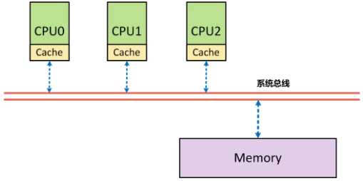
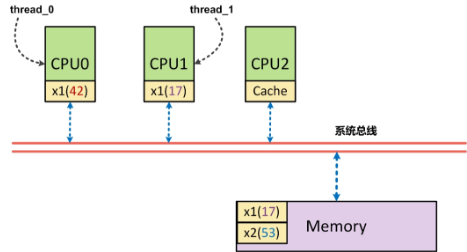
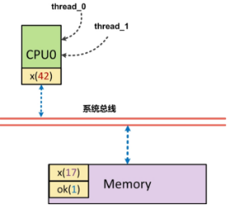
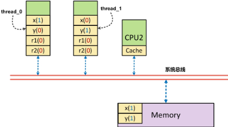
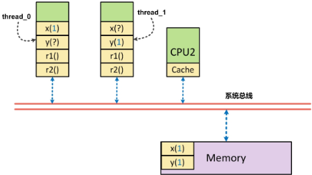

内存屏障（Memory Barrier）是 一种同步机制，用于保证多线程编程中内存操作顺序的正确性 。这在多核处理器和现代复杂架构中尤为重要。内存屏障通过限制或重排序内存操作， 防止编译器或处理器对指令的重排序，以确保某些特定顺序的操作被严格按照程序员所指定的顺序执行。
内存屏障是一种底层原语，在不同计算机架构下有不同的实现细节。本文主要在 x86_64 处理器下，通过 Linux 及其内核代码来分析和使用内存屏障。
对大多数应用层开发者来说，“内存屏障”（Memory Barrier）是一种陌生，甚至有些诡异的技术。实际上，它常被用在操作系统内核中，用于实现同步机制 、驱动程序等。 利用它，能实现高效的无锁数据结构，提高多线程程序的性能表现。
本文首先探讨了内存屏障的必要性，之后介绍如何使用内存屏障实现一个无锁环形缓冲区（队列），用于在多个线程间进行高效的数据交换。
理解内存屏障
不少开发者并不理解一个事实——程序实际运行时很可能并不完全按照开发者编写的顺序访问内存。例如：
1 | x = r; |
这里，y = 1 很可能先于 x = r 执行。这就是内存乱序访问。
内存乱序访问行为出现的理由是为了提升程序运行时的性能。编译器和 CPU 都可能引起内存乱序访问：
- 编译时，编译器优化进行指令重排而导致内存乱序访问；
- 运行时，多 CPU 间交互引入内存乱序访问。
编译器和 CPU 引入内存乱序访问通常不会带来什么问题，但在一些特殊情况下（主要是多线程程序中），逻辑的正确性依赖于内存访问顺序。这时，内存乱序访问会带来逻辑上的错误，例如：
1 | // thread 0 |
ok 初始化为 0，线程 0 等待 ok 被设置为 1 后执行 do 函数。
假如，线程 1 对内存的写操作乱序执行，也就是 x 赋值晚于 ok 赋值完成，那么 do 函数接受的实参很有可能出乎开发者的意料，不为 42。
我们可以引入内存屏障来避免上述问题的出现。内存屏障能让 CPU 或者编译器在内存访问上有序。一个内存屏障之前的内存访问操作必定先于其之后的完成。
内存屏障包括两类：编译器屏障和 CPU 内存屏障。
编译时内存乱序访问
优化前
编译器对代码做出优化时，可能改变实际执行指令的顺序（例如 gcc 下 -O2 或 -O3 都可能会改变实际执行指令的顺序），看一个例子：
1 | // example.c |
使用 Compiler Explorer 直接编译源文件：gcc -g -o output.s -masm=intel -fno-verbose-asm -S -fdiagnostics-color=always example.c。我们得到相关的汇编代码如下：
1 | x: |
这里我们可以看到，x = r 和 y = 1 并没有乱序执行。现使用优化选项 -O2/-O3 编译上面的代码（gcc -O2 …），生成汇编代码如下：
1 | f: |
我们可以清楚地看到经过编译器优化之后，y = 1 先于 x = r 执行，这意味着，编译器优化导致了内存乱序访问。
避免内存乱序行为的办法就是使用编译器屏障（又叫优化屏障）。Linux 内核提供了函数 barrier()，用于让编译器保证其之前的内存访问先于其之后的内存访问完成。
这个强制保证顺序的需求在哪里？换句话说乱序会带来什么问题？一个线程执行了 y = 1 , 但实际上 x = r 还没有执行完成，此时被另一个线程抢占，另一个线程执行，发现 y=1，以为此时 x 必定等于 r，执行相应逻辑，造成错误。
内核 barrier()
内核实现的编译器屏障 barrier()如下：
1 |
这是一个宏定义，在嵌入式编程或内核编程中经常使用。这个宏用于创建一个编译器内存屏障。
__asm__: 在 GCC 中，__asm__是用来插入内联汇编代码的关键字。__volatile__: 该关键字表明所插入的汇编代码是 “volatile” 的，告诉编译器不要优化这段代码，即使它看起来没有做任何有用的事情。"": 空字符串，表示没有实际的汇编指令。
输入和输出操作数：
: : : "memory": 这是内联汇编语法中用来指定输入、输出、和被修改的寄存器或内存位置的部分。
- 第一个冒号后面为空，表示没有输出操作数。
- 第二个冒号后面为空，表示没有输入操作数。
- 第三个冒号后面是 “memory”，表示这段内联汇编代码可能会影响内存。
标记 "memory" 有以下几个主要作用：
- 内存屏障：它告诉编译器，这段汇编代码可能会访问或修改内存。因此，编译器在优化时不能对这段代码前后的内存访问进行重排序。
- 确保代码顺序：编译器在遇到这段代码时，不会将这段代码前后的内存操作优化到其它位置。它会严格保持内存操作的顺序。
这样做的原因是为了确保某些关键内存操作在修改和访问内存时不会被编译器的优化机制打乱顺序。特别是在多线程编程和操作系统开发中，内存屏障非常重要，以确保内存访问的一致性和正确性。
优化后
现在把此编译器屏障 barrier()加入代码中：
1 |
|
再编译（使用优化选项 -O2 或 -O3），就会发现内存乱序访问已经不存在了。
1 | f: |
除了 barrier()函数外，本例还可以使用 volatile 这个关键字来避免编译时内存乱序访问（且仅能避免编译时的乱序访问），为什么呢？
可以参考前面部分的说明，编译器对于 volatile 声明究竟做了什么。volatile 关键字对于编译器而言，是开发者告诉编译器，这个变量内存的修改，可能不在你的可视范围内（比如被硬件或其他线程修改），不要对这个变量相关的代码进行优化，必须每次都从内存中实际读取或写入。
volatile 关键字能让 volatile 变量之间的内存访问上有序（仅指编译器行为保证的有序，不包括处理器行为导致的乱序），这里可以修改 x 和 y 的定义来解决问题：
1 | volatile int x, y, r; |
通过 volatile 关键字，使得 x 相对 y、y 相对 x 在内存访问上是有序的。
实际上，在 Linux 内核中，ACCESS_ONCE 宏就是通过 volatile 使得编译器在对连续使用 ACCESS_ONCE 访问一些变量时，避免对这些访问进行指令重排。它通过类型转换和解引用的方式，将变量视为 volatile，确保从内存中直接读取或写入。
避免编译器指令重排的第三个修改方案：
1 |
|
到此，基本上就阐述完成了编译时内存乱序访问的问题。下面看看 CPU 会有怎样的行为。
运行时内存乱序访问
乱序处理器
运行时，CPU 本身是会乱序执行指令的。
早期的处理器为有序处理器（in-order processors），总是按开发者编写的顺序执行指令，如果指令的输入操作对象（input operands）不可用（通常由于需要从内存中获取），那么处理器不会转而执行那些输入操作对象可用的指令，而是等待当前输入操作对象可用。相比之下，乱序处理器（out-of-order processors）会先处理那些有可用输入操作对象的指令（而非顺序执行）从而避免了等待，提高了效率。
现代计算机上，处理器运行的速度比内存访问快很多，有序处理器花在等待可用数据的时间里已可处理大量指令了。
即便现代处理器会乱序执行，但在单个 CPU 上，指令能通过指令队列顺序地获取并执行，结果利用队列顺序返回寄存器堆（详情可参考 这里），这使得程序执行时所有的内存访问操作看起来像是按程序代码编写的顺序执行的。因此，内存屏障是没有必要使用的（前提是不考虑编译器优化的情况下）。
SMP 架构
SMP（对称多处理，Symmetric Multiprocessing）是一种计算机体系结构，旨在提高系统的处理能力和容错性。这种架构中的多个处理器共享同一个内存以及 I/O 系统，每个处理器都能对称且并行地运行操作系统和应用程序。
SMP 架构需要内存屏障的进一步解释：
从体系结构上来看，首先在 SMP 架构下，每个 CPU 与内存之间，都配有自己的高速缓存（Cache），以减少访问内存时的冲突。
采用高速缓存（Cache）的写操作有两种模式：
- 穿透（Write through）模式：每次写时，都直接将数据写回内存中，效率相对较低。
- 回写（Write back）模式：写的时候先写回 Cache，然后由 Cache 的硬件在周转复用缓冲线 (Cache Line) 时自动将数据写回内存，或者由软件主动地“冲刷”有关的缓冲线。
出于性能的考虑，系统往往采用的是 Write back 模式来完成数据写入。正是由于存在 Cache 这一层，正是由于采用了 Write back 模式的数据写入，才导致 在 SMP 架构下，对 Cache 的运用可能改变对内存操作的顺序。
以上面的一个简短代码为例：
1 | // thread 0 - 在 CPU0 上运行 |
这里 CPU1 执行时， x 一定是打印出 42 吗？让我们来看看以下图为例的说明：
假设，正好 CPU0 的 Cache 中有 x，此时 CPU0 仅仅是将 x=42 写入到了 Cache 中，另外一个 ok 也在 Cache 中，但由于周转复用高速缓冲线（Cache Line）而导致将 ok=1 刷回到了内存中。此时 CPU1 首先执行对 ok 内存的读取操作，他读到了 ok 为 1 的结果，进而跳出循环，读取 x 的内容，但此时，由于实际写入的 x(42)还只在 CPU0 的 Cache 中，导致 CPU1 读到的数据为 x(17)。
程序中编排好的内存访问顺序（指令序：program ordering）是先写入 x，再写入 ok。而实际上出现在该 CPU 外部，即系统总线上的次序（处理器序：processor ordering）却是先写入 ok，再写入 x（这个例子中 x(42)还未写入）。
在 SMP 架构中，每个 CPU 都只知道自己何时会改变内存的内容，但是都不知道其它 CPU 会在什么时候改变内存的内容，也不知道自己本地的 Cache 中的内容是否与内存中的内容不一致。反过来，每个 CPU 都可能因为改变了内存内容，而使得其与其它 CPU 的 Cache 的内容不一致了。
在 SMP 架构下，由于 Cache 的存在而导致的内存访问次序（读或写都有可能顺序被改变）的改变很有可能影响到 CPU 间的同步与互斥。因此需要有一种手段，使得在某些操作之前，把这种“欠下”的内存操作（本例中的 x=42 的内存写入）全都最终地、物理地完成，就好像把欠下的债都结清，然后再开始新的（通常是比较重要的）活动一样。这种手段就是 内存屏障，其本质原理就是对系统总线加锁。
非 SMP 架构
回过头来，我们再来看看为什么非 SMP 架构（UP 架构）下，运行时内存乱序访问不存在。
在单处理器架构下，各个进程在宏观上是并行的，但是在微观上却是串行的，因为在同一时间点上，只有一个进程真正在运行（系统中只有一个处理器）。在这种情况下，我们再来看看上面提到的例子：
thread 0 和 thread 1 的指令都将在 CPU0 上按照指令序执行。thread 0 通过 CPU0 完成 x=42 的 Cache 写入后，再将 ok=1 写入内存，此后串行的将 thread 0 换出，thread 1 换入，即使此时 x=42 并未写入内存，但由于 thread 1 的执行仍然是在 CPU0 上执行，他仍然访问的是 CPU0 的 Cache。因此，即使 x=42 还未写回到内存中，thread 1 势必还是先从 Cache 中读到 x=42，再从内存中读到 ok=1。
综上所述，在单 CPU 上，多线程执行不存在运行时内存乱序访问，我们从内核源码也可得到类似结论（代码不完全摘录）。
1 |
这里可看到对内存屏障的定义，如果是 SMP 架构，smp_mb 定义为 mb()，mb()为 CPU 内存屏障（接下来要谈的），而非 SMP 架构时（也就是 UP 架构），直接使用编译器屏障 barrier，运行时内存乱序访问并不存在。
多 CPU 乱序原因
为什么多 CPU 情况下会存在内存乱序访问？
我们知道每个 CPU 都存在 Cache，当一个特定数据第一次被其它 CPU 获取时，此数据显然不在对应 CPU 的 Cache 中（这就是 Cache Miss）。
这意味着 CPU 要从内存中获取数据（这个过程需要 CPU 等待数百个周期），此数据将被加载到 CPU 的 Cache 中，这样后续就能直接从 Cache 上快速访问。
当某个 CPU 进行写操作时，他必须确保其它 CPU 已将此数据从他们的 Cache 中移除（以便保证一致性），只有在移除操作完成后，此 CPU 才能安全地修改数据。
显然，存在多个 Cache 时，必须通过一个 Cache 一致性协议来避免数据不一致的问题，而这个通信的过程就可能导致乱序访问的出现，也就是运行时内存乱序访问。
受篇幅所限，这里不再深入讨论整个细节，有兴趣的读者可以研究《Memory Barriers: a Hardware View for Software Hackers》这篇文章，它详细地分析了整个过程。
现在通过一个例子来直观地说明多 CPU 下内存乱序访问的问题：
1 | volatile int x, y, r1, r2; |
变量均被初始化为 0，run0 和 run1 运行在不同的线程中。如果 run0 和 run1 在同一个 cpu 下执行完成，那么就如我们所料，r1 和 r2 的值不会同时为 0（原因见 非 SMP 架构小节）。如果 run0 和 run1 在不同的 CPU 下执行完成后，内存访问可以被 CPU 或编译器重排序，导致不同的执行顺序，这时 r1 和 r2 可能同时为 0。
1 | // r1=0, r2=0 |
我们可以 使用 CPU 内存屏障来避免运行时内存乱序访问（x86_64）：
1 | // thread 0 |
sfence/lfence/mfence
在 x86-64 系统架构中，内存屏障（Memory Fence）是用于控制 CPU 指令和内存访问顺序的关键指令。这些指令在并发编程和多线程环境中尤为重要，以确保内存操作按预期的顺序执行。x86-64 系统架构提供了三种主要的内存屏障指令：sfence、lfence 和 mfence。以下是对这三种内存屏障的详细介绍（根据 GPT 的回复整理）：
sfence（Store Fence）：
功能：
- 确保所有在
sfence之前的 存储操作（写操作）在所有后续的存储操作之前完成。 - 注意：sfence 不会强制将数据立即写回内存（可以在 cache 中），只是确保写操作的顺序性。
用途：
sfence通常用于确保写入顺序的一致性，特别是在写入不同处理器或内存区域时。- 常用于需要强制将缓冲区中的写入操作同步到共享内存或 I/O 设备上。
示例：
1 | // 写入共享变量 |
lfence（Load Fence）：
功能：
- 确保所有在
lfence之前的 加载操作（读操作）在所有后续的加载操作之前完成。 - 在加载（读取）指定数据时防止内存访问重排序（比如正常应该按 A->B->C 的顺序读取，使用 lfence 可以保证按 A->B->C 的顺序读取）。
- 注意：lfence 不会强制从内存中读取数据（可以在 cache 中），只是确保读取操作的顺序性。
用途：
lfence通常用于执行内存读操作的序列控制。- 用于防止 CPU 在提前读取数据时造成的潜在数据一致性问题，特别是在读取敏感数据或具备安全隐患的场景下。
示例：
1 | // 读取共享变量之前插入 lfence，确保之前的所有内存读取操作已完成 |
mfence（Memory Fence）：
功能：
- 确保所有在
mfence之前的 加载和存储操作 在所有后续的加载和存储操作之前完成。它起到的是全内存屏障的作用。 - 注意：mfence 不会强制从内存中读取数据、或写回数据到内存（可以在 cache 中），只是确保读取、写入操作的顺序性，即它能保证在其之前的写入操作对其他 CPU 可见（它可以确保一个线程对变量的更新在另一个线程读取时是最新的）。
用途：
mfence是在需要同时控制读写操作顺序的情况下使用的。- 在多线程程序中，我们可以 用
mfence来确保跨多个 CPU 的内存访问顺序的一致性。
示例：
1 | // 执行一些读写操作 |
多线程下的运行时乱序
为什么仅通过保证了写者的写入顺序（sfence），还是有可能有问题？还是之前的例子
1 | // thread 0 |
如果仅仅是对“写入”操作进行顺序化，实际上，还是有可能使的上面的代码出现 r1，r2 同时为 0（初始值）的场景：
当 CPU0 上的 thread 0 执行时，x 被先行写回到内存中，但如果此时 y 在 CPU0 的 Cache 中，这时 y 从缓存中读出，并被赋予 r1 写回内存，此时 r1 为 0。同理，CPU1 上的 thread 1 执行时，y 被先行写回到内存中，如果此时 x 在 CPU1 的 Cache 中存在，则此时 r2 被赋予了 x 的（过时）值 0，同样存在了 r1, r2 同时为 0。【这里的写回到内存：可能是主存也能是 cache】
这个现象实际上就是所谓的 r1=y 的读顺序与 x=1 的写顺序存在逻辑上的乱序所致（或者是 r2=x 与 y=1 存在乱序）——读操作与写操作之间存在乱序。而 mfence 就是将这类乱序也屏蔽掉。
如果是通过 mfence，是怎样解决该问题的呢？
当 thread 0 在 CPU0 上对 x=1 进行写入时，x=1 被刷新到内存中，由于是 mfence，他要求 r1 的读取操作从内存读取数据，而不是从缓存中读取数据。因此，此时如果 y 更新为 1，则 r1=1；如果 y 没有更新为 1，则 r1=0。同时，此时由于 x 更新为 1， r2 必须从内存中读取数据，则此时 r2=1。总而言之，r1 和 r2 一个为 0、一个为 1。【mfence 能保证在其之前的写入操作对其他 CPU 可见】
内存屏障补充
关于内存屏障的一些补充：
在实际的应用程序开发中，开发者可能完全不知道内存屏障就写出了正确的多线程程序，这主要是因为各种同步机制中已隐含了内存屏障（但和实际的内存屏障有细微差别），使得不直接使用内存屏障也不会存在任何问题。但如果你希望编写诸如无锁数据结构，那么内存屏障意义重大。
在 Linux 内核中，除了前面说到的编译器屏障 barrier()和 ACESS_ONCE()，还有 CPU 内存屏障：
- 通用屏障，保证读写操作有序，包括 mb()和 smp_mb();
- 写操作屏障，仅保证写操作有序，包括 wmb()和 smp_wmb();
- 读操作屏障，仅保证读操作有序，包括 rmb()和 smp_rmb();
注意，所有的 CPU 内存屏障（除了数据依赖屏障外）都隐含了编译器屏障（也就是使用 CPU 内存屏障后就无需再额外添加编译器屏障了）。
这里，在单处理器上 smp_x()直接使用编译器屏障（即 barrier()），而在 SMP 架构上才使用 CPU 内存屏障（即 mb()、wmb()、rmb()）。
还需要注意一点是，CPU 内存屏障中某些类型的屏障需要成对使用，否则会出错。详细来说就是：一个写操作屏障需要和读操作（或者数据依赖）屏障一起使用（当然，通用屏障也是可以的），反之亦然。
通常，我们是希望在写屏障之前出现的 STORE 操作，总是匹配读屏障或者数据依赖屏障之后出现的 LOAD 操作。以之前的代码示例：
1 | // thread 0 |
我们这么做，是希望在 thread 1 执行到 do(x)时（在 ok 验证的确 =1 时），x=42 的确是有效的（写屏障之前出现的 STORE 操作），此时 do(x)，的确是在执行 do(42)（读屏障之后出现的 LOAD 操作）。
最后，以一个使用内存屏障实现的无锁环形缓冲区来结束本文：DPDK 无锁环形队列。
参考资料：